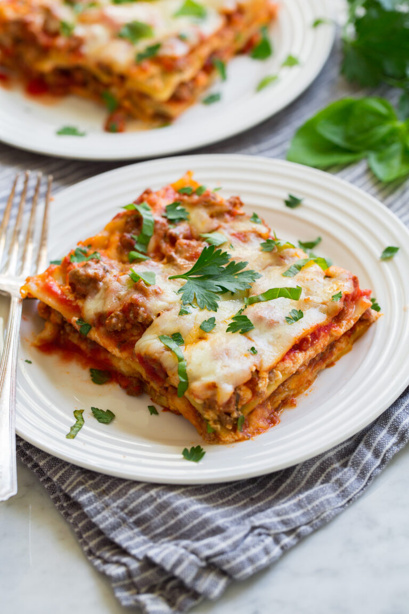

Lasagna

Lasagna with some stuff to make it taste better
Ingredients
- Lean ground beef
- Marinara sauce
- Vegetable broth
- Lasagna noodles
- Ricotta cheese
- Shredded mozzarella cheese
- Shredded parmesan cheese
- Fresh basil or parsley (OPTIONAL)
Steps
- Preheat oven, grease baking dish.
- Cook beef in skillet.
- Stir in marinara sauce and vegetable broth.
Steps showing how to make the beefy lasagna sauce in a skillet.
- Layer to assemble lasagna, spread 1/3 of the marinara sauce into bottom of baking dish. Top with 3 lasagna
noodles.
- Spread 1/2 of the ricotta over the pasta. Top evenly with 1/2 of the mozzarella and 1/2 of the parmesan. Top
with another 1/3 of the sauce.
- Add 3 more lasagna noodles then spread even with with remaining 1/2 of the ricotta. Pour and spread over
last 1/3 of the sauce.
- Top with remaining 1/2 of the mozzarella and parmesan.
- Cover dish tightly with foil and bake.
- Remove foil then continue to bake uncovered.
- Let rest about 5 minutes before slicing. Garnish with fresh basil or parsley if desired.